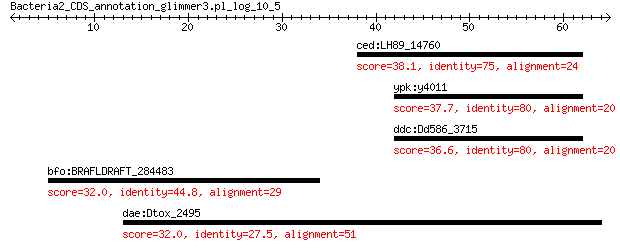

bitscore colors: <40, 40-50 , 50-80, 80-200, >200
 BLASTP 2.2.31+
Reference: Stephen F. Altschul, Thomas L. Madden, Alejandro A.
Schaffer, Jinghui Zhang, Zheng Zhang, Webb Miller, and David J.
Lipman (1997), "Gapped BLAST and PSI-BLAST: a new generation of
protein database search programs", Nucleic Acids Res. 25:3389-3402.
Reference for composition-based statistics: Alejandro A. Schaffer,
L. Aravind, Thomas L. Madden, Sergei Shavirin, John L. Spouge, Yuri
I. Wolf, Eugene V. Koonin, and Stephen F. Altschul (2001),
"Improving the accuracy of PSI-BLAST protein database searches with
composition-based statistics and other refinements", Nucleic Acids
Res. 29:2994-3005.
Database: all_orgs
14,240,465 sequences; 5,121,972,263 total letters
Query= Bacteria2_CDS_annotation_glimmer3.pl_log_10_5
Length=64
Score E
Sequences producing significant alignments: (Bits) Value
ced:LH89_14760 hypothetical protein 38.1 0.010
ypk:y4011 hypothetical protein 37.7 0.014
ddc:Dd586_3715 hypothetical protein 36.6 0.040
bfo:BRAFLDRAFT_284483 hypothetical protein 32.0 1.7
dae:Dtox_2495 hypothetical protein 32.0 7.5
> ced:LH89_14760 hypothetical protein
Length=74
Score = 38.1 bits (87), Expect = 0.010, Method: Compositional matrix adjust.
Identities = 18/24 (75%), Positives = 20/24 (83%), Gaps = 0/24 (0%)
Query 38 MLLWYKKDWLANLASSNRLCKKNM 61
ML + KDWLANLASS +LCKKNM
Sbjct 1 MLQLHTKDWLANLASSIQLCKKNM 24
> ypk:y4011 hypothetical protein
Length=55
Score = 37.7 bits (86), Expect = 0.014, Method: Compositional matrix adjust.
Identities = 16/20 (80%), Positives = 18/20 (90%), Gaps = 0/20 (0%)
Query 42 YKKDWLANLASSNRLCKKNM 61
+ KDWLANLASS +LCKKNM
Sbjct 4 HTKDWLANLASSTQLCKKNM 23
> ddc:Dd586_3715 hypothetical protein
Length=75
Score = 36.6 bits (83), Expect = 0.040, Method: Compositional matrix adjust.
Identities = 16/20 (80%), Positives = 18/20 (90%), Gaps = 0/20 (0%)
Query 42 YKKDWLANLASSNRLCKKNM 61
+ KDWLANLASS +LCKKNM
Sbjct 6 HTKDWLANLASSIQLCKKNM 25
> bfo:BRAFLDRAFT_284483 hypothetical protein
Length=85
Score = 32.0 bits (71), Expect = 1.7, Method: Compositional matrix adjust.
Identities = 13/29 (45%), Positives = 19/29 (66%), Gaps = 0/29 (0%)
Query 5 RNVNACYTGHYALLSYLFTATSFWKARFQ 33
R+ NACY GH+ +L+Y A + KAR +
Sbjct 37 RDSNACYMGHFDMLNYFAIAENETKARVK 65
> dae:Dtox_2495 hypothetical protein
Length=786
Score = 32.0 bits (71), Expect = 7.5, Method: Composition-based stats.
Identities = 14/52 (27%), Positives = 24/52 (46%), Gaps = 1/52 (2%)
Query 13 GHYALLSYLFTATSFWKARFQDTQTMLLWYKKDWLAN-LASSNRLCKKNMLF 63
G Y L Y +T F F + T+ W +++W++ +LC +N F
Sbjct 86 GQYRYLGYTYTGEPFTNQEFPNDDTLTTWEQRNWISQPWDKQYKLCGENDEF 137
Lambda K H a alpha
0.330 0.135 0.458 0.792 4.96
Gapped
Lambda K H a alpha sigma
0.267 0.0410 0.140 1.90 42.6 43.6
Effective search space used: 129060834644